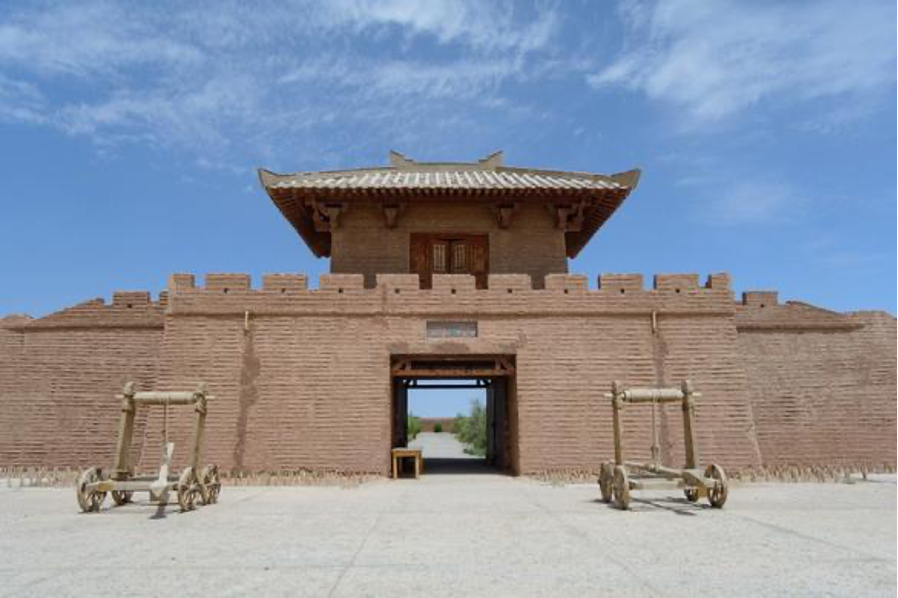

6 °
多云｜2-15°
今天
2-15°
明天
3-12°
后天
-1-8°
计划出发
大 美 敦 煌
Big scene of Dunhuang.
敦煌丝路遗产城与敦煌古城二选一
敦煌丝路遗产城占地6000亩，以中国文化和世界文明为主题，称为敦煌旅游景区中一颗新的明珠，实现“给我一天走遍千年，给我一天，走遍世界”的愿望。主要景点有“千佛崖”、“故宫太和殿”、“大明宫”、“福建客家土楼”、“南京总统府”、“辛亥革命红楼”、“清明上河图沙州古城”、“埃及神庙”以及孔雀园、鸵鸟园和跑马场等景点 敦煌古城是1987年为大型历史故事片《敦煌》，以宋代《清明上河图》为蓝本，参考中国古代建筑风格精心设计、建造而成。建筑面积1.27万平方米。敦煌古城位于大漠戈壁上，融千年西域民俗于一体。
西千佛洞
西千佛洞因位于敦煌莫高窟(俗称千佛洞)之西而得名，距离敦煌市区约 35公里，开凿于党河河岸的悬崖峭壁上，开凿年代从北魏、西魏、北周一直延续到五代时期。是敦煌艺术的重要组成部分，据藏于巴黎的敦煌遗书录，西千佛洞的开凿时间应早于敦煌莫高窟，晚也于莫高窟同一时期。
郭煌阳关景区
阳关位于河西走廊的敦煌市西南七十公里南湖乡“古董滩”上，因坐落在玉门关之南而取名阳关。“劝君更尽一杯酒，西出阳关无故人。”这座被历代文人墨客吟唱的古城，千百年来坚守到最后一座烽燧。阳关作为通往西域的门户，又是丝绸之路南道的重要关隘，是古代兵家必争的战略要地。而今，仅存一座被称为阳关耳目的汉代烽燧遗址，耸立在墩墩山上，让后人凭吊。
玉门关
当时玉门关，驼铃悠悠，人喊马嘶，商队络绎，使者往来，一派繁荣景象。2013年的汉玉门关遗迹，是一座四方形小城堡，耸立在东西走向戈壁滩狭长地带中的砂石岗上，登上古关，举目远眺，四周沼泽遍布，沟壑纵横，长城蜿蜒，烽燧兀立，胡杨挺拔，泉水碧绿。红柳花红，芦苇摇曳，与古关雄姿交相辉映，使你心驰神往，百感交集，怀古之情，油然而生。玉门关无论是怀古还是看景，都是非常不错的选择。尤其是玉门关的日落，更有一份厚重苍凉的美感，站在一旁的观景平台上，环顾苍茫天地，遥想金戈铁马烽火古战场，的确会有一种“念天地之悠悠”的苍凉悲怆，让你感到一丝丝的惆怅。
敦煌雅丹国家地质公园
景区分南北两区，东西长约25公里，南北宽约13公里。公园面积 346.34平方公里，主要是风蚀作用形成的地质遗迹。2001年12月国土资源部批准建立了“甘肃敦煌雅丹国家地质公园”，2003年8月正式开园揭碑，并对游客开放。2006年11月被国家评定为 AAAA级旅游景区，先后被批为国土资源科普基地、甘肃省科普教育基地、甘肃省省级地质遗迹自然保护区等。

无人区观戈壁星空
西晋壁画墓
敦煌西晋墓，是夫妻合葬甲字墓，在茫茫戈壁间。1983年被盗者发现并盗文物，继而才得以开掘。整个墓葬穴高度是117.5米，映入眼帘的是宽约一米二，渐递次窄长坡梯形通道约十多米长，通道的石基，是后来人用水泥糊过的。墙壁上的岩层，象莫高窟洞穴外的那些岩层一样，细小的卵石与粗粒的卵石，还有沙层，不同层次的重重叠叠，是自然条件下河床冲洗出来的岩层。而这些外面的岩层上面喷用现代高科技下的产物，PVC。因为年代的久远，空气的风化，如果不采用现代技术，时间久了，会自然剥落，脱落。伸手触摸，千百年前工匠的杰作，不禁心生感概。

锁阳城
锁阳城遗址位于位于瓜州县锁阳城镇，亦称“瓜州古城”、“苦峪城”，是集古城址、古墓葬、古星区等为一体的古文化遗存地，这里的古代军事防御系统和烽燧信息传递系统是我国保存最为完好的典型范本。1987年当地文物考古工作者对该遗址进行了调查。锁阳城按结构可分为内外两城，外城面积 80 万平方米；内城面积28万平方米；城内留有大量土台、房屋及其它建筑物遗迹。1996年，国务院公布为第四批全国重点文物保护单位。2014年6月22日，在卡塔尔多哈召开的联合国教科文组织第38届世界遗产委员会会议上，锁阳城遗址作为中国、哈萨克斯坦和吉尔吉斯斯坦三国联合申遗的“丝绸之路：长安-天山廊道的路网”中的一处遗址点成功列入《世界遗产名录》。
榆林窟
榆林窟又名万佛峡，位于甘肃省瓜州县(原安西县）城南70公里处。洞窟开凿在榆林河峡谷两岸直立的东西峭壁上，因河岸榆树成林而得名。1961年被国务院首批公布为全国重点文物保护单位。榆林窟是我国著名的石窟之一。从洞窟形式、表现内容和艺术风格看，与莫高窟十分相似，是莫高窟艺术系统的一个分支，历来被国内外学者所重视。榆林窟保存至今的彩塑共有250余身，壁画约5000余平方米，约占莫高窟壁画总面积的九分之一。榆林窟创建年代虽无文字可考，但从洞窟形式和有关题记推断，当开创于隋唐以前。从现存壁画风格和游人题记结街看，唐、五代、宋、西夏、元、清各代均有开凿和绘塑，进行过大规模的兴建。参观完榆林窟后，可选择参观榆林窟水库，又称榆林翡翠湖。天气晴朗时，波光粼粼，登高揽胜，美不胜收。
无界（海市蜃楼）
当时玉门关，驼铃悠悠，人喊马嘶，商队络绎，使者往来，一派繁荣景象。2013年的汉玉门关遗迹，是一座四方形小城堡，耸立在东西走向戈壁滩狭长地带中的砂石岗上，登上古关，举目远眺，四周沼泽遍布，沟壑纵横，长城蜿蜒，烽燧兀立，胡杨挺拔，泉水碧绿。红柳花红，芦苇摇曳，与古关雄姿交相辉映，使你心驰神往，百感交集，怀古之情，油然而生。玉门关无论是怀古还是看景，都是非常不错的选择。尤其是玉门关的日落，更有一份厚重苍凉的美感，站在一旁的观景平台上，环顾苍茫天地，遥想金戈铁马烽火古战场，的确会有一种“念天地之悠悠”的苍凉悲怆，让你感到一丝丝的惆怅。
大地之子
“大地之子”是由清华大学的董树斌教授组织设计和修建的，利用 3D扫描获取模型数据，然后在分块进行 3口雕刻完成，其中所需的资金也都是由这位教授筹集。“大地之子”总长共15米，宽9米，设计之初是感觉在荒漠中趴着一个沉睡的婴儿，能给这片沙漠增添一些生机和活力，让沙漠不像以往那般“死气沉沉”。
鸣沙山月牙泉风景名胜区
【参观游玩时间约 3小时】鸣沙山月牙泉风景名胜区，位于敦煌城南五公里，沙泉共处，妙造天成，古往今来以“沙漠奇观”善称于世。鸣沙山以沙动成响而得名。月牙泉处于鸣沙山环抱之中，其形酷似一弯新月而得名。鸣沙山月牙泉风景名胜区开发了滑沙、骑骆驼、驾乘沙漠越野车、卡丁车，跳牵引伞，以及沙浴、沙疗等活动。
门票费用：
旺季成人票：110元/人 优惠票（60-69岁)：55元/人
淡季成人票：55元/人 优惠票（60-69岁)：27.5元/人
敦煌莫高窟
【参观游玩时间约3小时】莫高窟俗称千佛洞，坐落在河西走廊西端的敦煌。它始建于十六国的前秦时期，历经十六国、北朝、隋、唐、五代、西夏、元等历代的兴建，形成巨大的规模，有洞窟735个，壁画4.5万平方米、泥质彩塑2415尊，是世界上现存规模大、内容较丰富的佛教艺术地。
旺季参观票：
全价票：238元/人•次（莫高窟8个实体洞窟 180元＋数字电影48元＋往返莫高窟交通费10元）
优惠票：148元/人•次（莫高窟8个实体洞窟90元＋数字电影48元＋往返莫高窟交通费10元）
淡季参观票：
全价票：票价140 元/人•次（莫高窟12个实体洞窟 90元＋数字电影 40元＋往返莫高窟交通费10元
优惠票：票价95 元/人•次（莫高窟 12个实体洞窟 45元＋数字电影 40 元＋往返莫高窟交通费10元）
【温馨提示】根据预约门票时间提前半小时到达莫高窟数字展示中心，并在售票口换取门票。进入观看2部数字电影《千年莫高》、《梦幻佛宫》 大约40分钟，观影后乘坐区间摆渡车至莫高窟景区 （大约15min)，到达景区跟着景区专职讲解员进入参观（25-30人一组），参观8个开放洞窟。 （小tips:洞窟内禁止拍照摄影）【景区内可免费参观藏经洞、陈列馆、敦煌研究院院史陈列馆、文物保护陈列中心和美术馆】参观结束乘坐区问摆渡车返回数字展示中心。